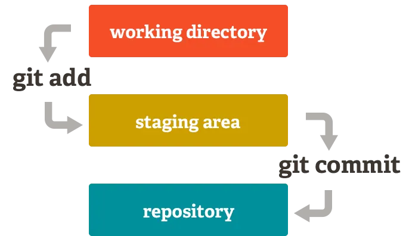

Git Basics - Teil 1
Dieses Dokument behandelt die grundlegenden Git-Befehle, die du benötigst, um mit Git zu arbeiten. Es ist eine Einführung in die wichtigsten Konzepte und Befehle von Git, damit du schnell loslegen kannst. Folgende Befehle werden behandelt: init, clone, status, add, commit und log.
Anmerkung: Dieser Text übernimmt Ausschnitte aus dem Buch “Pro Git” von Scott Chacon und Ben Straub, das unter der Creative Commons Attribution-NonCommercial-ShareAlike 3.0 Unported License veröffentlicht wurde. Das ganze Buch ist online verfügbar.
git Repositorys anlegen
Du hast zwei Möglichkeiten, ein Git-Repository auf Deinem Rechner anzulegen.
Du kannst ein lokales Verzeichnis, das sich derzeit nicht unter Versionskontrolle befindet, in ein Git-Repository verwandeln, oder
Du kannst ein bestehendes Git-Repository von einem anderen Ort aus klonen.
In beiden Fällen erhältst Du ein einsatzbereites Git-Repository auf Deinem lokalen Rechner.
Ein Repository in einem bestehenden Verzeichnis einrichten
Wenn Du ein Projektverzeichnis hast, das sich derzeit nicht unter Versionskontrolle befindet, und Du mit dessen Versionierung über Git beginnen möchten, musst Du zunächst in das Verzeichnis dieses Projekts wechseln. Das sieht je nachdem, welches System verwendet wird, unterschiedlich aus:
für Linux:
$ cd /home/user/my_projectfür macOS:
$ cd /Users/user/my_projectfür Windows:
$ cd C:/Users/user/my_projectFühre dort folgenden Befehl aus:
$ git initDer Befehl git init erzeugt ein Unterverzeichnis .git,
in dem alle relevanten Git-Repository-Daten enthalten sind, also so
etwas wie ein Git-Repository Grundgerüst. Zu diesem Zeitpunkt werden
noch keine Dateien in Git versioniert.
Wenn Du bereits existierende Dateien versionieren möchtest (und es
sich nicht nur um ein leeres Verzeichnis handelt), dann solltest Du den
aktuellen Stand mit einem initialen Commit tracken. Mit dem Befehl
git add legst Du fest, welche Dateien versioniert werden
sollen und mit dem Befehl git commit erzeugst Du einen
neuen Commit: Du kannst dies mit ein paar git add-Befehlen erreichen.
Damit markierst du die zu trackende Dateien. Anschließend gibst du ein
git commit ein:
$ git add *.c
$ git add LICENSE
$ git commit -m 'Initial project version'Wir werden gleich noch einmal genauer auf diese Befehle eingehen. Im Moment ist nur wichtig zu verstehen, dass du jetzt ein Git-Repository erzeugt und einen ersten Commit angelegt hast.
Ein existierendes Repository klonen
Wenn du eine Kopie eines existierenden Git-Repositorys anlegen
möchtest – um beispielsweise an einem Projekt mitzuarbeiten – kannst du
den Befehl git clone verwenden. Anstatt nur eine einfache
Arbeitskopie vom Projekt zu erzeugen, lädt Git nahezu alle Daten, die
der Server bereithält, auf den lokalen Rechner. Jede Version von jeder
Datei der Projekt-Historie wird automatisch heruntergeladen, wenn du
git clone ausführst. Wenn deine Serverfestplatte beschädigt
wird, kannst du nahezu jeden der Klone auf irgendeinem Client verwenden,
um den Server wieder in den Zustand zurückzusetzen, in dem er sich zum
Zeitpunkt des Klonens befand.
Du klonst ein Repository mit dem Befehl git clone [url].
Um beispielsweise das Repository der verlinkbaren Git-Bibliothek libgit2
zu klonen, führst du folgenden Befehl aus:
$ git clone https://github.com/libgit2/libgit2Git legt dann ein Verzeichnis libgit2 an, initialisiert in diesem ein .git Verzeichnis, lädt alle Daten des Repositorys herunter und checkt eine Kopie der aktuellsten Version aus. Wenn du in das neue libgit2 Verzeichnis wechselst, findest du dort die Projektdateien und kannst gleich damit arbeiten.
Wenn du das Repository in ein Verzeichnis mit einem anderen Namen als libgit2 klonen möchtest, kannst du das wie folgt durchführen:
$ git clone https://github.com/libgit2/libgit2 mylibgitDieser Befehl tut das Gleiche wie der vorhergehende, aber das Zielverzeichnis lautet diesmal mylibgit.
Git unterstützt eine Reihe unterschiedlicher Übertragungsprotokolle. Das vorhergehende Beispiel verwendet das https:// Protokoll, aber dir könnten auch die Angaben git:// oder user@server:path/to/repo.git begegnen, welches das SSH-Transfer-Protokoll verwendet. Kapitel 4, Git auf dem Server, stellt alle verfügbaren Optionen vor, die der Server für den Zugriff auf dein Git-Repository hat und die Vor- und Nachteile der möglichen Optionen.
Die drei Zustände
Jetzt heißt es aufgepasst! Es folgt die wichtigste Information, die man sich merken muss, wenn man Git erlernen und dabei Fallstricke vermeiden will. Git definiert drei Hauptzustände, in denen sich eine Datei befinden kann: geändert (engl. modified), für Commit vorgemerkt (engl. staged) und committet (engl. committed).
Modified bedeutet, dass eine Datei geändert, aber noch nicht in die lokale Datenbank eingecheckt wurde.
Staged bedeutet, dass eine geänderte Datei in ihrem gegenwärtigen Zustand für den nächsten Commit vorgemerkt ist.
Committed bedeutet, dass die Daten sicher in der lokalen Datenbank gespeichert sind.
Das führt uns zu den drei Hauptbereichen eines Git-Projekts: dem Verzeichnisbaum (engl. Working Tree), der sogenannten Staging-Area und dem Git-Verzeichnis.

Der Verzeichnisbaum ist ist die aktuelle “Arbeitskopie”, die du verwendest und Dateien änderst, hinzufügst oder löscht.
Die Staging-Area ist in der Regel eine Datei, die sich in deinem Git-Verzeichnis befindet und Informationen darüber speichert, was in deinem nächsten Commit einfließen soll.
Im Git-Verzeichnis werden die Metadaten und die Objektdatenbank für dein Projekt gespeichert. Das ist der wichtigste Teil von Git, dieser Teil wird kopiert, wenn man ein Repository von einem anderen Rechner klont.
Der grundlegende Git-Arbeitsablauf sieht in etwa so aus:
Du änderst Dateien in deinem Verzeichnisbaum.
Du stellst selektiv Änderungen bereit, die du bei deinem nächsten Commit berücksichtigen möchtest, wodurch nur diese Änderungen in den Staging-Bereich aufgenommen werden.
Du führst einen Commit aus, der die Dateien so übernimmt, wie sie sich in der Staging-Area befinden und diesen Snapshot dauerhaft in deinem Git-Verzeichnis speichert.
Wenn sich eine bestimmte Version einer Datei im Git-Verzeichnis befindet, wird sie als committed betrachtet. Wenn sie geändert und in die Staging-Area hinzugefügt wurde, gilt sie als für den Commit vorgemerkt (engl. staged). Und wenn sie geändert, aber noch nicht zur Staging-Area hinzugefügt wurde, gilt sie als geändert (engl. modified).
Zustand von Dateien prüfen
Das wichtigste Hilfsmittel, um den Zustand zu überprüfen, in dem sich
deine Dateien gerade befinden, ist der Befehl git status.
Wenn du diesen Befehl unmittelbar nach dem Klonen eines Repositorys
ausführen, sollte er in etwa folgende Ausgabe liefern:
$ git status
On branch master
Your branch is up-to-date with 'origin/master'.
nothing to commit, working tree cleanDieser Zustand wird auch als sauberes Arbeitsverzeichnis (engl. clean working directory) bezeichnet. Mit anderen Worten, es gibt keine Dateien, die unter Versionsverwaltung stehen und seit dem letzten Commit geändert wurden – andernfalls würden sie hier aufgelistet werden.
Nehmen wir einmal an, du fügst eine neue Datei mit dem Namen
README zu deinem Projekt hinzu. Wenn die Datei zuvor nicht
existiert hat und du jetzt git status ausführst, zeigt Git
die bisher nicht versionierte Datei wie folgt an:
$ echo 'My Project' > README
$ git status
On branch master
Your branch is up-to-date with 'origin/master'.
Untracked files:
(use "git add <file>..." to include in what will be committed)
README
nothing added to commit but untracked files present (use "git add" to track)Alle Dateien, die im Abschnitt „Untracked files“ aufgelistet werden,
sind Dateien, die bisher noch nicht versioniert sind. Dort wird jetzt
auch die Datei README angezeigt. Mit anderen Worten, die
Datei README wird in diesem Bereich gelistet, weil sie im
letzten Schnappschuss nicht enthalten war und noch nicht gestaged wurde.
Git nimmt eine solche Datei nicht automatisch in die Versionsverwaltung
auf. Du musst Git dazu ausdrücklich auffordern. Ansonsten würden
generierte Binärdateien oder andere Dateien, die du nicht in deinem
Repository haben möchtest, automatisch hinzugefügt werden. Das möchte
man in den meisten Fällen vermeiden. Jetzt wollen wir aber Änderungen an
der Datei README verfolgen und fügen sie deshalb zur Versionsverwaltung
hinzu.
Neue und geänderte Dateien zur Staging-Area hinzufügen
Neue Dateien zur Versionsverwaltung hinzufügen
Um eine neue Datei zu versionieren, kannst du den Befehl
git add verwenden. Für eine neue README Datei,
kannst du folgendes ausführen:
$ git add READMEWenn du erneut den Befehl git status ausführst, wirst du
sehen, dass sich deine README Datei jetzt unter
Versionsverwaltung befindet und für den nächsten Commit vorgemerkt
ist:
$ git status
On branch master
Your branch is up-to-date with 'origin/master'.
Changes to be committed:
(use "git restore --staged <file>..." to unstage)
new file: READMEDu kannst erkennen, dass die Datei für den nächsten Commit vorgemerkt
ist, weil sie unter der Rubrik „Changes to be committed“ aufgelistet
ist. Wenn du jetzt einen Commit anlegst, wird der Schnappschuss den
Zustand der Datei festhalten, den sie zum Zeitpunkt des
Befehls git add hat. Du erinnerst dich vielleicht
daran, wie du vorhin git init und anschließend
git add <files> ausgeführt hast. Mit diesen Befehlen
hast du die Dateien in deinem Verzeichnis zur Versionsverwaltung
hinzugefügt. Der Befehl git add akzeptiert einen Pfadnamen
einer Datei oder eines Verzeichnisses. Wenn du ein Verzeichnis angibst,
fügt git add alle Dateien in diesem Verzeichnis und allen
Unterverzeichnissen rekursiv hinzu.
Geänderte Dateien zur Staging-Area hinzufügen
Lass uns jetzt eine bereits versionierte Datei ändern. Wenn du zum
Beispiel eine bereits unter Versionsverwaltung stehende Datei mit dem
Dateinamen CONTRIBUTING.md änderst und danach den Befehl
git status erneut ausführst, erhältst du in etwa folgende
Ausgabe:
$ vim CONTRIBUTING.md
$ git status
On branch master
Your branch is up-to-date with 'origin/master'.
Changes to be committed:
(use "git reset HEAD <file>..." to unstage)
new file: README
Changes not staged for commit:
(use "git add <file>..." to update what will be committed)
(use "git checkout -- <file>..." to discard changes in working directory)
modified: CONTRIBUTING.mdDie Datei CONTRIBUTING.md erscheint im Abschnitt
„Changes not staged for commit“. Das bedeutet, dass eine versionierte
Datei im Arbeitsverzeichnis verändert worden ist, aber noch nicht für
den Commit vorgemerkt wurde. Um sie vorzumerken, führst du den Befehl
git add aus. Der Befehl git add wird zu vielen
verschiedenen Zwecken eingesetzt. Man verwendet ihn, um neue Dateien zur
Versionsverwaltung hinzuzufügen, Dateien für einen Commit vorzumerken
und verschiedene andere Dinge – beispielsweise einen Konflikt aus einem
Merge als aufgelöst zu kennzeichnen. Leider wird der Befehl
git add oft missverstanden. Viele assoziieren damit, dass
damit Dateien zum Projekt hinzugefügt werden. Wie du aber gerade gelernt
hast, wird der Befehl auch noch für viele andere Dinge eingesetzt. Wenn
du den Befehl git add einsetzt, solltest du das eher so
sehen, dass du damit einen bestimmten Inhalt für den nächsten
Commit vormerkst. Lass uns nun mit git add die
Datei CONTRIBUTING.md zur Staging-Area hinzufügen und
danach das Ergebnis mit git status kontrollieren:
$ git add CONTRIBUTING.md
$ git status
On branch master
Your branch is up-to-date with 'origin/master'.
Changes to be committed:
(use "git reset HEAD <file>..." to unstage)
new file: README
modified: CONTRIBUTING.mdBeide Dateien sind nun für den nächsten Commit vorgemerkt. Nehmen wir
an, du willst jetzt aber noch eine weitere Änderung an der Datei
CONTRIBUTING.md vornehmen, bevor du den Commit tatsächlich
startest. Du öffnest die Datei erneut, änderst sie entsprechend ab und
eigentlich wärst du jetzt bereit den Commit durchzuführen. Lass uns
vorher noch einmal den Befehl git status ausführen:
$ git status
On branch master
Your branch is up-to-date with 'origin/master'.
Changes to be committed:
(use "git reset HEAD <file>..." to unstage)
new file: README
modified: CONTRIBUTING.md
Changes not staged for commit:
(use "git add <file>..." to update what will be committed)
(use "git checkout -- <file>..." to discard changes in working directory)
modified: CONTRIBUTING.mdWas zum Kuckuck …? Jetzt wird die Datei CONTRIBUTING.md
sowohl in der Staging-Area als auch als geändert aufgelistet. Wie ist
das möglich? Die Erklärung dafür ist, dass Git eine Datei in exakt dem
Zustand für den Commit vormerkt, in dem sie sich befindet, wenn du den
Befehl git add ausführst. Wenn du den Commit jetzt anlegst,
wird die Version der Datei CONTRIBUTING.md denjenigen
Inhalt haben, den sie hatte, als du git add zuletzt
ausgeführt hast und nicht denjenigen, den sie in dem Moment hat, wenn du
den Befehl git commit ausführst. Wenn du stattdessen die
gegenwärtige Version im Commit haben möchten, müsst du erneut
git add ausführen, um die Datei der Staging-Area
hinzuzufügen:
$ git add CONTRIBUTING.md
$ git status
On branch master
Your branch is up-to-date with 'origin/master'.
Changes to be committed:
(use "git reset HEAD <file>..." to unstage)
new file: README
modified: CONTRIBUTING.mdDie Änderungen committen
Nachdem deine Staging-Area nun so eingerichtet ist, wie du es
wünschst, kannst du deine Änderungen committen. Denke daran, dass alles,
was noch nicht zum Commit vorgemerkt ist – alle Dateien, die du erstellt
oder geändert hast und für die du seit deiner Bearbeitung nicht mehr git
add ausgeführt hast – nicht in diesen Commit einfließen werden. Sie
bleiben aber als geänderte Dateien auf deiner Festplatte erhalten. In
diesem Beispiel nehmen wir an, dass du beim letzten Mal, als du
git status ausgeführt hast, gesehen hast, dass alles zum
Commit vorgemerkt wurde und du bereit bist, alle deine Änderungen zu
committen. Am einfachsten committen man, wenn git commit
eingegeben wird:
$ git commitDadurch wird der Editor deiner Wahl gestartet.
Anmerkung: Der Editor wird durch die Umgebungsvariable EDITOR deiner
Shell festgelegt. Du kannst den Editor aber auch mit dem Befehl
git config --global core.editor beliebig konfigurieren.
Der Editor zeigt den folgenden Text an (dieses Beispiel ist eine Vim-Ansicht):
# Please enter the commit message for your changes. Lines starting
# with '#' will be ignored, and an empty message aborts the commit.
# On branch master
# Your branch is up-to-date with 'origin/master'.
#
# Changes to be committed:
# new file: README
# modified: CONTRIBUTING.md
#
~
~
~
".git/COMMIT_EDITMSG" 9L, 283CDu kannst erkennen, dass die Standard-Commit-Meldung die neueste
Ausgabe des Befehls git status auskommentiert und eine
leere Zeile darüber enthält. Du kannst über den Kommentartext eine
Commit-Nachricht eingeben, die beschreibt, was du geändert hast.
Alternativ kannst du deine Commit-Nachricht auch inline mit dem
Befehl commit -m eingeben. Das Flag -m
ermöglicht die direkte Eingabe eines Kommentartextes:
$ git commit -m "Story 182: fix benchmarks for speed"
[master 463dc4f] Story 182: fix benchmarks for speed
2 files changed, 2 insertions(+)
create mode 100644 READMEJetzt hast du deinen ersten Commit erstellt! Du kannst sehen, dass der Commit eine Nachricht über sich selbst ausgegeben hat: in welchen Branch du committet hast (master), welche SHA-1-Prüfsumme der Commit hat (463dc4f), wie viele Dateien geändert wurden und Statistiken über hinzugefügte und entfernte Zeilen im Commit.
Denke daran, dass der Commit den Snapshot aufzeichnet, den du in deiner Staging-Area eingerichtet hast. Alles, was von dir nicht zum Commit vorgemerkt wurde, ist weiterhin verfügbar. Du kannst einen weiteren Commit durchführen, um es zu deiner Historie hinzuzufügen. Jedes Mal, wenn du einen Commit ausführst, zeichnest du einen Schnappschuss deines Projekts auf, auf den du zurückgreifen oder mit dem du später vergleichen kannst.
Die Staging-Area überspringen
Obwohl es außerordentlich nützlich sein kann, Commits so zu
erstellen, wie du es wünschst, ist die Staging-Area manchmal etwas
komplexer, als du es für deinen Workflow benötigst. Wenn du die
Staging-Area überspringen möchten, bietet Git eine einfache Kurzform.
Durch das Hinzufügen der Option -a zum Befehl
git commit wird jede Datei, die bereits vor dem Commit
versioniert war, automatisch von Git zum Commit staged, so dass du den
Teil git add überspringen kannst:
$ git status
On branch master
Your branch is up-to-date with 'origin/master'.
Changes not staged for commit:
(use "git add <file>..." to update what will be committed)
(use "git checkout -- <file>..." to discard changes in working directory)
modified: CONTRIBUTING.md
no changes added to commit (use "git add" and/or "git commit -a")
$ git commit -a -m 'Add new benchmarks'
[master 83e38c7] Add new benchmarks
1 file changed, 5 insertions(+), 0 deletions(-)Beachte, dass du in diesem Fall git add nicht für die
Datei CONTRIBUTING.md ausführen musst, bevor du committest.
Das liegt daran, dass das -a-Flag alle geänderten Dateien
einschließt. Das ist bequem. Aber sei vorsichtig, manchmal führt dieses
Flag dazu, dass du ungewollte Änderungen vornimmst.
Anzeigen der Commit-Historie
Nachdem du mehrere Commits erstellt hast, oder wenn du ein Repository
mit einer bestehenden Commit-Historie geklont hast, wirst du
wahrscheinlich zurückschauen wollen, um zu erfahren, was geschehen ist.
Das wichtigste und mächtigste Werkzeug dafür ist der Befehl
git log.
Diese Beispiele verwenden ein sehr einfaches Projekt namens „simplegit“. Um das Projekt zu erstellen, führe diesen Befehl aus:
$ git clone https://github.com/schacon/simplegit-progit
Wenn du git log in diesem Projekt aufrufst, solltest du
eine Ausgabe erhalten, die ungefähr so aussieht:
$ git log
commit ca82a6dff817ec66f44342007202690a93763949
Author: Scott Chacon <schacon@gee-mail.com>
Date: Mon Mar 17 21:52:11 2008 -0700
Change version number
commit 085bb3bcb608e1e8451d4b2432f8ecbe6306e7e7
Author: Scott Chacon <schacon@gee-mail.com>
Date: Sat Mar 15 16:40:33 2008 -0700
Remove unnecessary test
commit a11bef06a3f659402fe7563abf99ad00de2209e6
Author: Scott Chacon <schacon@gee-mail.com>
Date: Sat Mar 15 10:31:28 2008 -0700
Initial commitStandardmäßig, d.h. ohne Argumente, listet git log die
in diesem Repository vorgenommenen Commits in umgekehrter
chronologischer Reihenfolge auf, d.h. die neuesten Commits
werden als Erstes angezeigt. Wie du sehen kannst, listet dieser
Befehl jeden Commit mit seiner SHA-1-Prüfsumme, dem Namen und der
E-Mail-Adresse des Autors, dem Erstellungs-Datum und der
Commit-Beschreibung auf.
Eine Vielzahl von Optionen stehen für den Befehl git log
zur Verfügung, um dir exakt das anzuzeigen, wonach du suchst. Hier
zeigen wir dir einige der gängigsten.
Eine der hilfreichsten Optionen ist -p oder
--patch. Sie zeigt die Änderungen (die patch-Ausgabe) an,
die bei jedem Commit durchgeführt wurden. Du kannst auch die Anzahl der
anzuzeigenden Protokolleinträge begrenzen, z.B. mit -2
werden nur die letzten beiden Einträge dargestellt.
$ git log -p -2
commit ca82a6dff817ec66f44342007202690a93763949
Author: Scott Chacon <schacon@gee-mail.com>
Date: Mon Mar 17 21:52:11 2008 -0700
Change version number
diff --git a/Rakefile b/Rakefile
index a874b73..8f94139 100644
--- a/Rakefile
+++ b/Rakefile
@@ -5,7 +5,7 @@ require 'rake/gempackagetask'
spec = Gem::Specification.new do |s|
s.platform = Gem::Platform::RUBY
s.name = "simplegit"
- s.version = "0.1.0"
+ s.version = "0.1.1"
s.author = "Scott Chacon"
s.email = "schacon@gee-mail.com"
s.summary = "A simple gem for using Git in Ruby code."
commit 085bb3bcb608e1e8451d4b2432f8ecbe6306e7e7
Author: Scott Chacon <schacon@gee-mail.com>
Date: Sat Mar 15 16:40:33 2008 -0700
Remove unnecessary test
diff --git a/lib/simplegit.rb b/lib/simplegit.rb
index a0a60ae..47c6340 100644
--- a/lib/simplegit.rb
+++ b/lib/simplegit.rb
@@ -18,8 +18,3 @@ class SimpleGit
end
end
-
-if $0 == __FILE__
- git = SimpleGit.new
- puts git.show
-endDiese Option zeigt die gleichen Informationen an, jedoch mit der diff
Ausgabe direkt nach jedem Eintrag. Dies ist sehr hilfreich für die
Codeüberprüfung oder um schnell zu durchsuchen, was während einer Reihe
von Commits passiert ist, die ein Teammitglied hinzugefügt hat. Du
kannst auch mehrere Optionen zur Verdichtung der Ausgabe von git log
verwenden. Wenn du beispielsweise einige gekürzte Statistiken für jeden
Commit sehen möchtest, kannst du die Option --stat
verwenden:
$ git log --stat
commit ca82a6dff817ec66f44342007202690a93763949
Author: Scott Chacon <schacon@gee-mail.com>
Date: Mon Mar 17 21:52:11 2008 -0700
Change version number
Rakefile | 2 +-
1 file changed, 1 insertion(+), 1 deletion(-)
commit 085bb3bcb608e1e8451d4b2432f8ecbe6306e7e7
Author: Scott Chacon <schacon@gee-mail.com>
Date: Sat Mar 15 16:40:33 2008 -0700
Remove unnecessary test
lib/simplegit.rb | 5 -----
1 file changed, 5 deletions(-)
commit a11bef06a3f659402fe7563abf99ad00de2209e6
Author: Scott Chacon <schacon@gee-mail.com>
Date: Sat Mar 15 10:31:28 2008 -0700
Initial commit
README | 6 ++++++
Rakefile | 23 +++++++++++++++++++++++
lib/simplegit.rb | 25 +++++++++++++++++++++++++
3 files changed, 54 insertions(+)Wie du sehen kannst, gibt die Option --stat unter jedem
Commit-Eintrag eine Liste der geänderten Dateien aus, wie viele Dateien
geändert wurden und wie viele Zeilen in diesen Dateien hinzugefügt (+)
und entfernt wurden (-). Sie enthält auch eine Zusammenfassung am Ende
des Berichts.
Eine weitere wirklich nützliche Option ist --pretty.
Diese Option ändert das Format der Log-Ausgabe in ein anderes als das
Standard-Format. Dir stehen einige vorgefertigte Optionswerte zur
Verfügung. Der Wert oneline für diese Option gibt jeden Commit in einer
einzigen Zeile aus, was besonders nützlich ist, wenn du dir viele
Commits ansiehst. Darüber hinaus zeigen die Werte short, full und fuller
die Ausgabe im etwa gleichen Format, allerdings mit mehr oder weniger
Informationen an:
$ git log --pretty=oneline
ca82a6dff817ec66f44342007202690a93763949 Change version number
085bb3bcb608e1e8451d4b2432f8ecbe6306e7e7 Remove unnecessary test
a11bef06a3f659402fe7563abf99ad00de2209e6 Initial commit